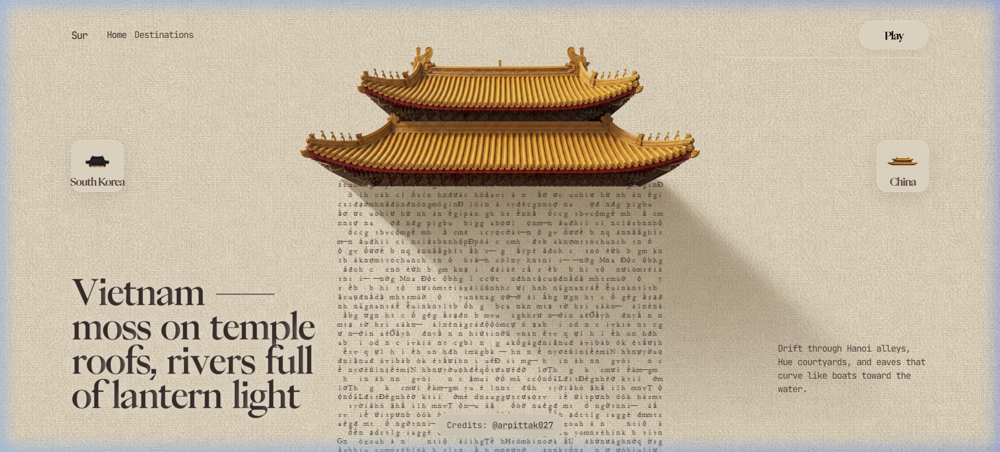
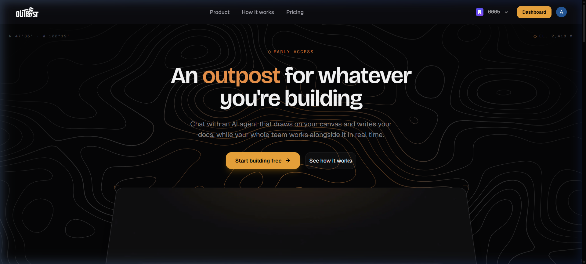
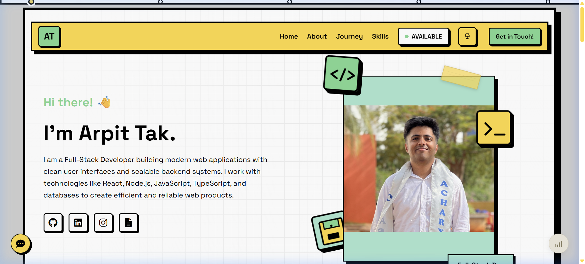
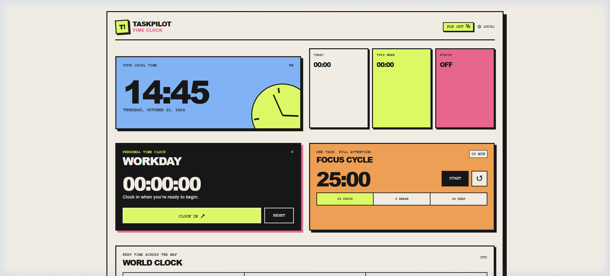
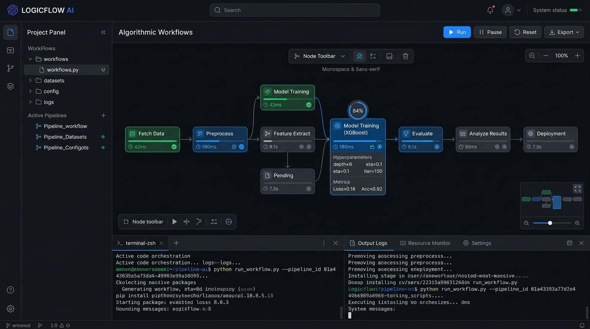

Hey, I’m Arpit
a full-stack developer
I am a Computer Science & Engineering graduate from Visvesvaraya Technological University in Bengaluru, building modern web applications with clean user interfaces and scalable backend systems.
I work across the stack with React, Node.js, TypeScript, Express, and MongoDB. Recently built Sur, an interactive web experience simulating traditional wind chimes with physics animations, and OUTPOST, an agentic AI workspace.
Passionate about problem solving, AI-assisted development, and building impactful digital solutions.
Selected work
-
Sur An interactive web experience showcasing physics-based wind chimes from 5+ countries with GSAP animations, sound, and glassmorphism UI.

-
OUTPOST Next-gen agentic AI workspace for real-time collaboration with an AI agent that writes rich documents and draws live visual canvas diagrams.

-
Interactive Portfolio Personal developer portfolio featuring an interactive antique treasure map, custom pirate overlay, skill cards, and playful micro-animations.

-
QuickEMS Full-stack employee management system with role-based dashboards, authentication, staff directory, and streamlined record-keeping.
-
Interactive Clock Physics-driven interactive timepiece web application experimenting with modern SVG geometry, transitions, and dynamic time rendering.

-
HackerRank Orchestrate Algorithmic problem-solving suite and automated code execution pipelines focused on optimal time-complexity data structures.

Skills & journey
-
Frontend & UI Engineering — React.js, TypeScript, JavaScript (ES6+), Material-UI, Bootstrap, React Native, GSAP, and Responsive CSS. Focused on building tactile micro-interactions, responsive physics, and accessible components.
Frontend Stack · Modern Web Technologies -
Backend & Cloud APIs — Node.js, Express.js, RESTful Architecture, Firebase, and NGINX. Proficient in developing reliable services, authentication pipelines, and performant server routes.
Backend & Infrastructure · Server & Systems -
Databases & Languages — MongoDB, SQL, Python, JavaScript, and TypeScript. Experienced in data modeling, query optimization, algorithmic analysis, and modular codebase structure.
Core Engineering · Data & Computation -
Bachelor of Engineering (B.E.) in Computer Science & Engineering (2022 – 2026) from Visvesvaraya Technological University (Acharya Institute of Technology), Bengaluru. Utilizing modern developer workflows with Git, Jira, VSCode, and Antigravity.
Education & Tools · Acharya Institute of Technology (VTU)